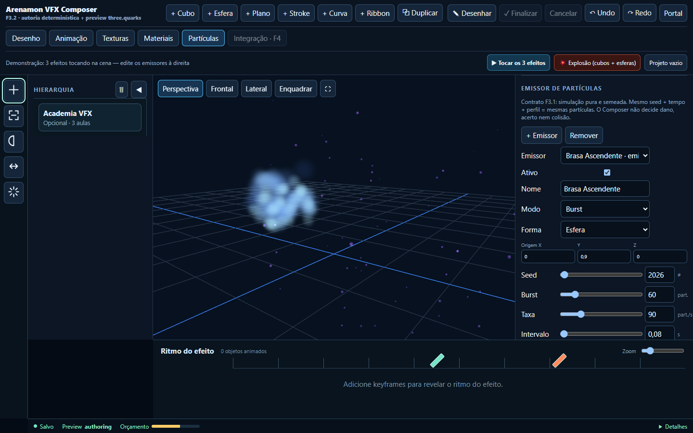
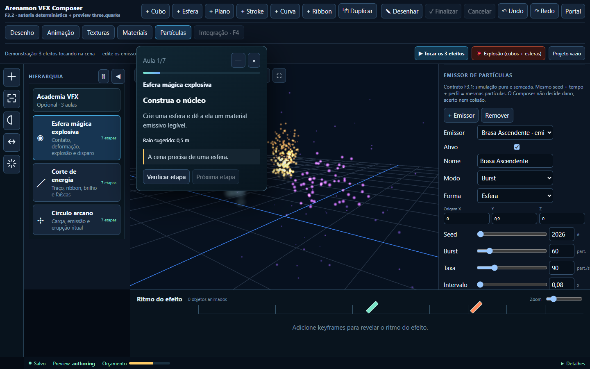

VFX Composer · overhaul visual
Evidências geradas pelos testes focados de navegador, usando o mesmo HTML offline entregue.

Workspace de autoria completo, dimensionado para referência em zoom 80%.
Academia opcional: esfera mágica com fluxo de contato, deformação, explosão e disparo.Abrir resultado estruturado dos testes